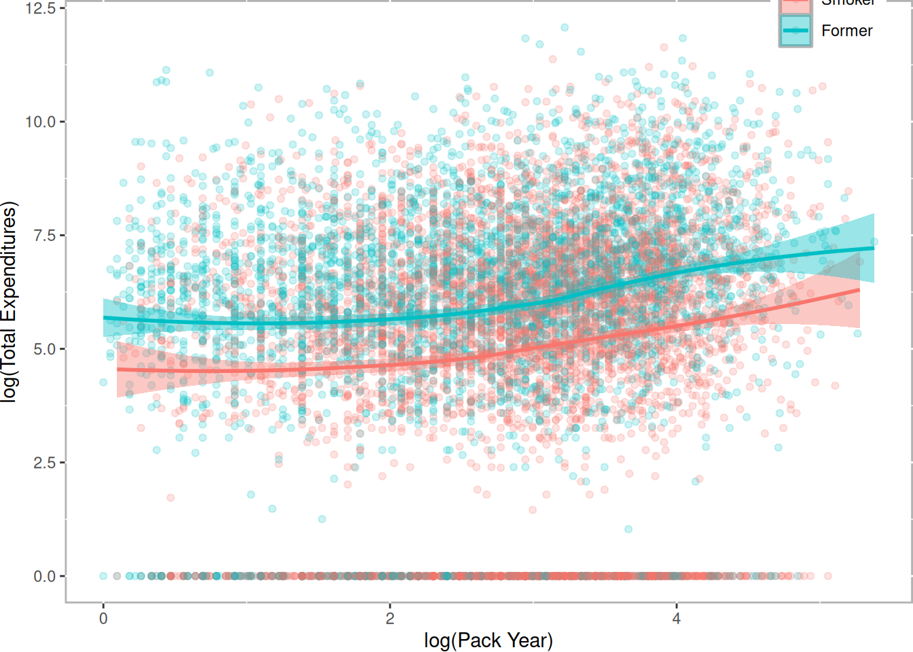
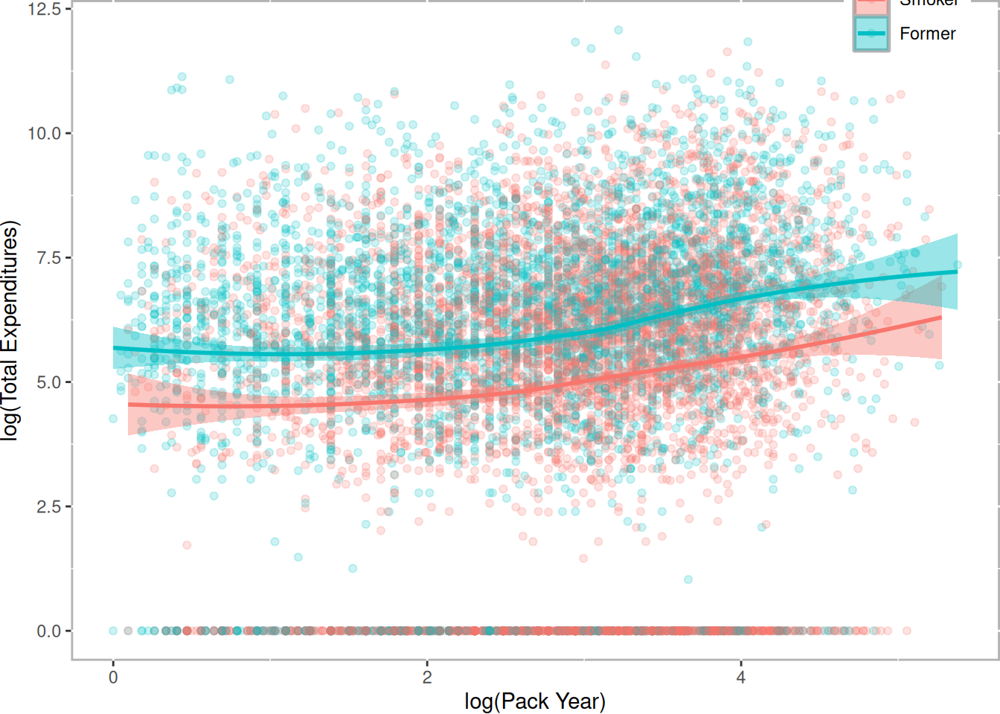
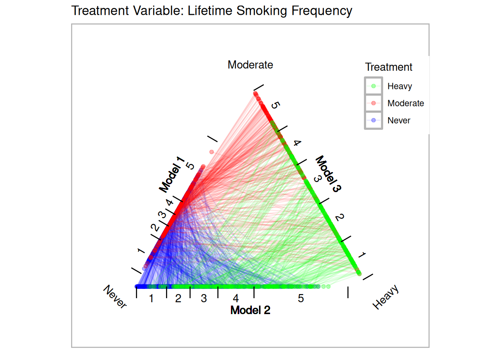
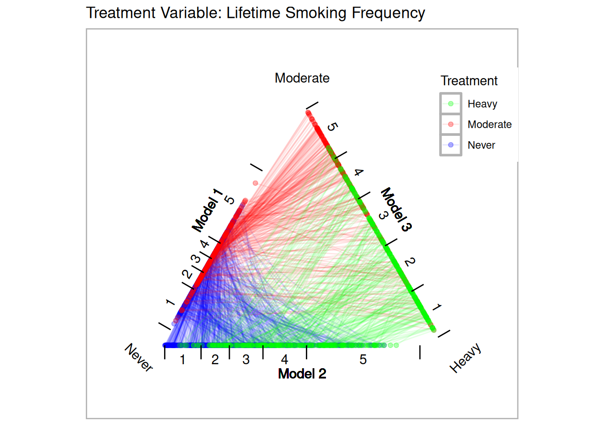
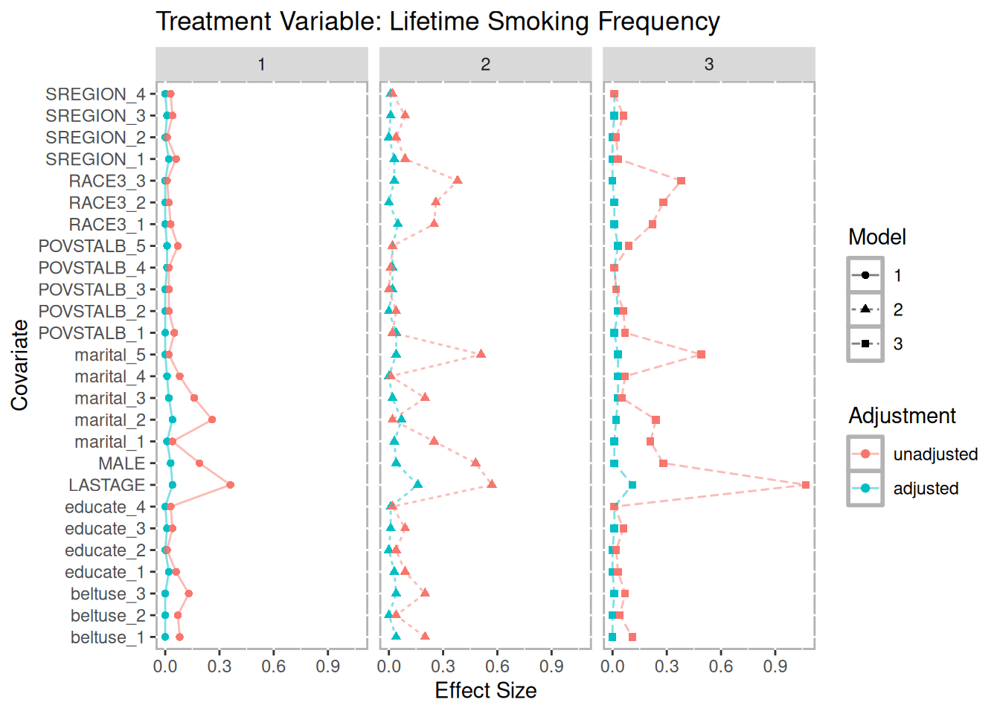
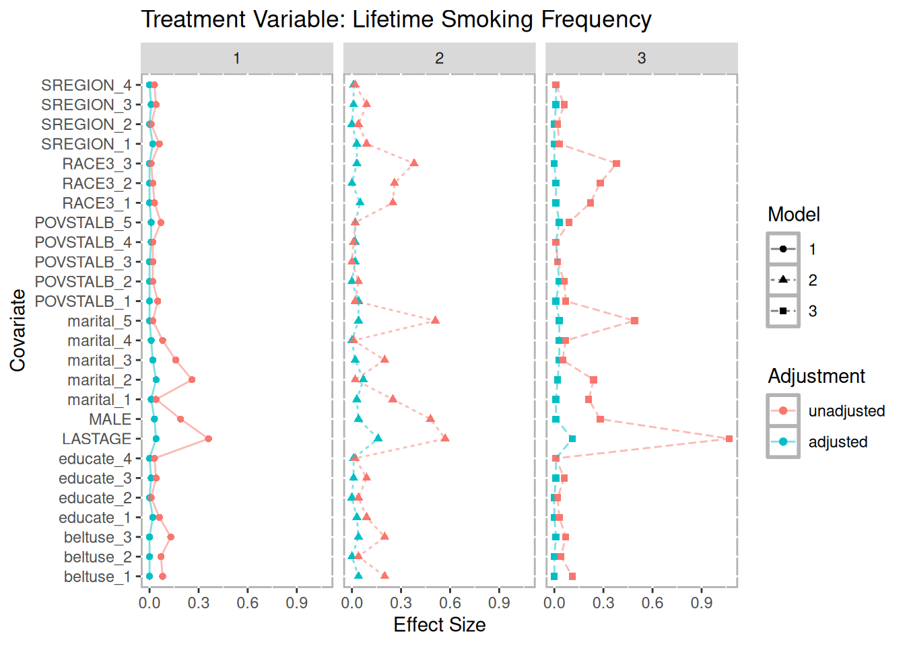
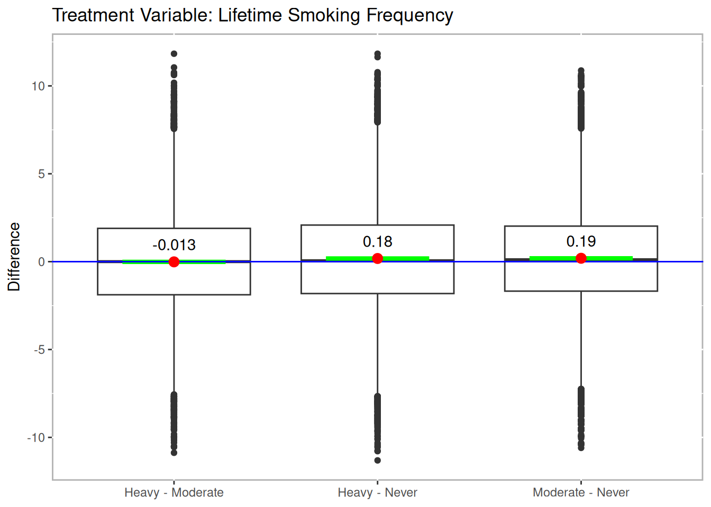
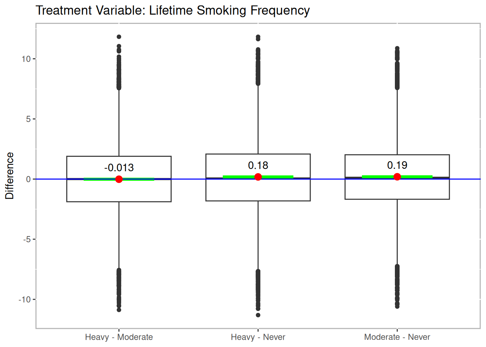

11 Effects of Smoking on Medical Expenditures
In this example5 we will utilize the National Medical Expenditure Study (National Center For Health Services Research 1987) to estimate the effects of smoking on medical expenditures. This dataset was first used by (Johnson et al. 2003) to estimate the effects of smoking on diseases, and then the effect of diseases on medical expenditures. (Imai and Dyk 2004b) developed an a method to generalize the propensity score, called a p-score, to directly estimate the effects of smoking on medical expenditures. More specifically, they defined a quantitative treatment variable, pack year, defined as:
\[packyear = \frac{\text{number of cigarettes per day}}{20} \times \text{number of years smoked}\]
Our approach is designed to match three separate groups and not a continuous treatment. We will address two research questions: (1) What are the effects of smoking status (i.e. never smoked, former smoker, and current smoker) on medical expenditures? and (2) What are the effects of lifetime smoking on medical expenditures? Figure 11.1 represent the relationship between these two different treatments6. This figure reveals several, perhaps counterintuitive, facts. First, the unadjusted total medical expenditures for former smokers is higher than current smokers. Secondly, the distribution of \(log(packyear)\) overlap substantial between former and current smokers. To dichotomize the pack year smoking variable, we will split on the median of pack year, labeled moderate smokers (i.e. \(packyear \le median(packyear)\)) and heavy smokers (i.e. \(packyear > median(packyear)\)).
data(nmes)
nmes <- subset(nmes, select = c(packyears, smoke, LASTAGE, MALE, RACE3, beltuse, educate, marital, SREGION, POVSTALB, HSQACCWT, TOTALEXP))Both (Johnson et al. 2003) and (Imai and Dyk 2004b) conducted a complete-case analysis and Johnson et al. reported that multiple imputation did not substantially affect their results.
nmes <- na.omit(nmes)Since many participants had zero medical expenditures, we will add one to the total expenditures before log transforming the variable. We will then calculate the median of pack year and create a new treatment variable, smoke2, for moderate and heavy smokers with non-smokers.
nmes$smoke <- factor(nmes$smoke, levels=c(0,1,2), labels=c("Never","Smoker","Former"))
nmes$LogTotalExp <- log(nmes$TOTALEXP + 1)
(medPY <- median(nmes[nmes$smoke != "Never",]$packyears))## 17.00
table(nmes$smoke, nmes$packyears > medPY)##
## FALSE TRUE
## Never 9802 0
## Smoker 2571 2901
## Former 2209 1869
nmes$smoke2 <- ifelse(nmes$smoke == "Never", "Never",
ifelse(nmes$packyears > 17, "Heavy", "Moderate"))
table(nmes$smoke, nmes$smoke2, useNA="ifany")##
## Heavy Moderate Never
## Never 0 0 9802
## Smoker 2901 2571 0
## Former 1869 2209 0
ggplot(nmes[nmes$smoke != "Never",], aes(x=log(packyears+1), color=smoke, fill=smoke)) +
geom_density(alpha=.1) +
theme(legend.position="none", plot.margin=rep(unit(0, "cm"), 4)) +
xlab("") + ylab("Density")
ggplot(nmes[nmes$smoke != "Never",], aes(x=log(packyears+1), y=LogTotalExp, color=smoke, fill=smoke)) +
geom_point(alpha=.2) +
geom_smooth(method="loess", formula = y ~ x) +
scale_color_hue("") + scale_fill_hue("") +
theme(legend.position=c(.9,1), plot.margin=rep(unit(0, "cm"), 4)) +
xlab("log(Pack Year)") + ylab("log(Total Expenditures)") 
Figure 11.1: Relationship Between Pack Year and Total Expenditures by Current Smoking Status
Imai and van Dyk observed that there appeared to be a relationship between age and medical expenditures. We will create a new categorical age variable using quintiles to use for partial exact matching. This serves two purposes, first it ensures balance on this critical covariate (note that we will also exactly match on gender and ethnicity) and two, decrease the search space for matched triplets therefore increasing the efficiency of the matching algorithm. The possible disadvantage of exact matching is that too many treated units will not be matched. We will examine unmatched treatment units below.
nmes$LastAge5 <- cut(nmes$LASTAGE,
breaks=quantile(nmes$LASTAGE, probs=seq(0,1,1/5)),
include.lowest=TRUE, orderd_result=TRUE)Define our model to estimate the propensity scores.
formu <- ~ LASTAGE + MALE + RACE3 + beltuse + educate + marital +
SREGION + POVSTALBEstimate propensity scores for our two different treatments. Figure 11.2 provides triangle plots for both models.
tpsa.smoke <- trips(nmes, nmes$smoke, formu)
tpsa.packyears <- trips(nmes, nmes$smoke2, formu)
p.smoke <- plot(tpsa.smoke, sample=c(.05), edge.alpha=.1) + ggtitle("Treatment Variable: Current Smoking Status")
p.packyears <- plot(tpsa.packyears, sample=c(.05), edge.alpha=.1) + ggtitle("Treatment Variable: Lifetime Smoking Frequency")
p.smoke
p.packyears 
Figure 11.2: Triangle Plots for NMES
Create two sets of matched triplets for our two treatments.
tmatch.smoke <- trimatch(tpsa.smoke,
exact=nmes[,c("LastAge5","MALE","RACE3")])
tmatch.packyears <- trimatch(tpsa.packyears,
exact=nmes[,c("LastAge5","MALE","RACE3")])The following summary of the unmatched rows show that more than 96% of the treatment units were matched in both models.
summary(unmatched(tmatch.smoke))## 7048 (36.4%) of 19352 total data points were not matched.
## Unmatched by treatment:
## Never Smoker Former
## 6804 (69.4%) 142 (2.6%) 102 (2.5%)
summary(unmatched(tmatch.packyears))## 7532 (38.9%) of 19352 total data points were not matched.
## Unmatched by treatment:
## Heavy Moderate Never
## 181 (3.79%) 323 (6.76%) 7028 (71.7%)Figure 11.3 is a multiple covariate balance plot for the two treatments. It shows that the absolute effect sizes after adjustment is better for all covariates. The demo included in the TriMatch package provides functions to create individual balance plots for each covaraite.
p.smoke <- multibalance.plot(tpsa.smoke) + ggtitle("Treatment Variable: Current Smoking Status")
p.packyears <- multibalance.plot(tpsa.packyears) + ggtitle("Treatment Variable: Lifetime Smoking Frequency")
p.smoke
p.packyears 
Figure 11.3: Multiple Covariate Balance Plots for NMES
11.1 Phase II: Estimating Effects of Smoking on Medical Expenditures
For both treatment regimes we used the maximumTreat method for finding matched triplets that will retain each treatment unit once with the possibility of using treatment units twice in cases where a treatment unit would not otherwise be matched. The Friedman Rank Sum Test and repeated measures ANOVA indicate there a statistically significant difference in both treatment regimes. Figure 11.4 provides box plots of the differences for the two treatment regimes. For the current smoking status treatment, the results indicate that smoker’s actually spend less than former and non-smokers. However, as (Imai and Dyk 2004b) explain, the sample of smokers includes only survivors and should be considered when interpreting these results.
Imai and van Dyk’s analysis used pack year as treatment indicator. Our dichotomizing of pack year into moderate and heavy smokers more closely adheres to their approach. The results with this treatment regime indicate that smokers, both moderate and heavy, have higher medical expenditures than non-smokers. However, there is no statistically significant difference between heavy and moderate smokers in medical expenditures.
boxdiff.plot(tmatch.smoke, nmes$LogTotalExp, ordering=c("Smoker","Former","Never")) +
ggtitle("Treatment Variable: Current Smoking Status")
boxdiff.plot(tmatch.packyears, nmes$LogTotalExp, ordering=c("Heavy","Moderate","Never")) +
ggtitle("Treatment Variable: Lifetime Smoking Frequency") 
Figure 11.4: Boxplot of Differences for NMES
sum.smoke <- summary(tmatch.smoke, nmes$LogTotalExp,
ordering=c("Smoker","Former","Never"))
sum.packyears <- summary(tmatch.packyears, nmes$LogTotalExp,
ordering=c("Heavy","Moderate","Never"))
print("Current Smoking Status" = sum.smoke, "Smoking Frequency" = sum.packyears)## Method Friedman.chi2 Friedman.p rmANOVA.F rmANOVA.p
## 1 Current Smoking Status 88.92973 4.888274e-20 *** 74.75344 4.985672e-33
## 2 Smoking Frequency 33.73246 4.732484e-08 *** 13.72351 1.110186e-06
##
## 1 ***
## 2 ***
sum.smoke$t.tests## Treatments t df p.value sig mean.diff ci.min
## 1 Smoker.out-Former.out -11.606558 7407 7.053664e-31 *** -0.4777939 -0.5584907
## 2 Smoker.out-Never.out -2.644559 7407 8.196991e-03 ** -0.1114564 -0.1940737
## 3 Former.out-Never.out 9.321687 7407 1.483073e-20 *** 0.3663375 0.2892994
## ci.max
## 1 -0.39709714
## 2 -0.02883914
## 3 0.44337570
sum.packyears$t.test## Treatments t df p.value sig mean.diff
## 1 Heavy.out-Moderate.out -0.3063659 7507 7.593345e-01 -0.01251173
## 2 Heavy.out-Never.out 4.3264245 7507 1.535124e-05 *** 0.17925216
## 3 Moderate.out-Never.out 4.7239231 7507 2.355422e-06 *** 0.19176389
## ci.min ci.max
## 1 -0.09256793 0.06754447
## 2 0.09803395 0.26047036
## 3 0.11218788 0.27133989